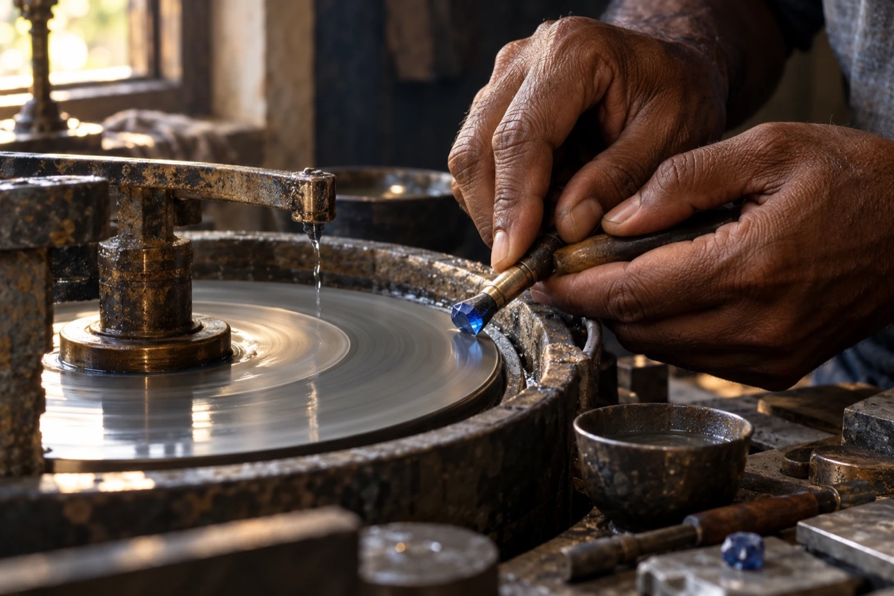

From our island.
To your story.
Celvyr was founded by Inthikaf Ahamed with a simple idea: finding a gemstone should feel as special as the stone itself. Not rushed. Not confusing. Not a gamble. Just you, a remarkable colour, and someone who knows it well enough to tell you the truth about it.
Explore our gemstones
A gemstone is chosen for what comes next.”
The boy who never stopped looking.
Inthikaf Ahamed grew up in Sri Lanka, an island where gems turn up in riverbeds and family stories alike. By high school he was hooked — trading questions with cutters, learning to read colour in daylight, and saving every rupee for stones he couldn't stop thinking about.
Life took him to Japan, where he spent the next ten years. There he learned a different kind of craft: the precision of doing a thing properly, the patience to never rush quality, and a respect for the customer that runs through every small detail. The passion never left. It only waited.
Now Inthikaf is back in Sri Lanka, building the gem house he dreamed of as a teenager. Years of relationships with miners, cutters and trusted dealers give him first look at stones most buyers never see — and the experience to tell a great gem from a good one.
For families in Sri Lanka marking a milestone, and for collectors and couples overseas who want a Ceylon stone they can trust. Wherever you are, you deal with Inthikaf directly — honest answers, real photos, and a gem that's worth the wait.
“When I was sixteen, I held my first blue sapphire up to the window and I've been chasing that feeling ever since. Japan taught me that the small details are the whole job — how you speak to someone, how you pack a box, how honestly you describe what you're selling.
That's what Celvyr is. Every stone is one I've personally looked at, questioned and fallen for. If I wouldn't keep it, I won't offer it to you. Whether you're in Colombo or across the world, message me — I'll answer you myself, and I'll tell you the truth about every stone.”
Look closer.
Choose with confidence.
Colour is only the beginning. Shape, proportion and the tiny details inside a stone are what make it yours. We invite you to explore, ask every question you have, and take your time — the right gem is worth waiting for.
Character comes first.
A saturated blue. A warm golden glow. A softer blush. Start with the colour you keep coming back to — we'll find the stone that carries it best.
Room for every question.
From carat weight to treatment history, the details deserve a clear, unhurried conversation. Ask us anything. We'll answer straight.
A personal next chapter.
For an engagement ring, a meaningful gift, or a collection that grows with you. Wherever the stone is going, we'll help it get there.
We'd love to hear what you're looking for.
Your gemstone journey can begin with a single message.